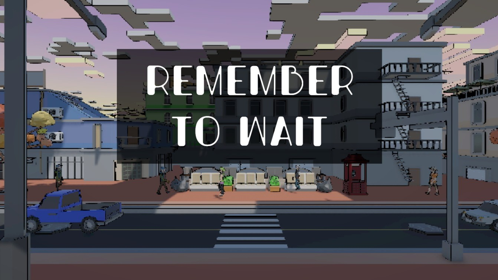

01
Programming
Implemented the gameplay logic and interactions needed to turn the concept into a playable first-person experience within the game jam scope.
GAME JAM / NARRATIVE PUZZLE
A short first-person puzzle-narrative experience about the tension between rushing and waiting, created by Raccoon Interactive during a 48-hour game jam.

OVERVIEW
The player follows a worker obsessed with his career, constantly pushed to decide whether to rush or wait. The opening turns an everyday routine into a source of pressure: get ready, leave the apartment and catch the bus before time runs out.
The core idea is deliberately simple: waiting is not treated as dead time, but as part of the mechanic and the narrative. That contrast between urgency and patience gives the experience its identity.
CONTRIBUTION
01
Implemented the gameplay logic and interactions needed to turn the concept into a playable first-person experience within the game jam scope.
02
Designed and iterated the spatial flow, objectives and player guidance so the route stayed readable while preserving the feeling of urgency.
03
Working inside a 48-hour scope meant testing gameplay and level layout quickly, prioritising clarity and cutting anything that did not support the central concept.
The project received the award for Best Sound Effects and Soundtrack.
RACCOON INTERACTIVE / GAME JAM TEAM
Remember to Wait was created by Raccoon Interactive during the Rome Game Dev Jam 2025. The game is available on the team's itch.io page.